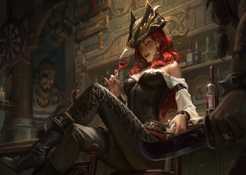
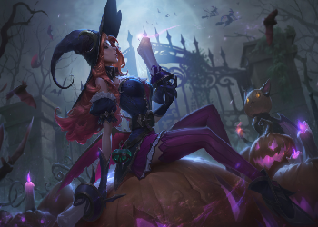
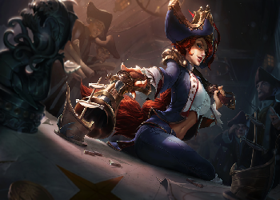

MISS FORTUNE
Uma capitã de Águas de Sentina famosa por sua aparência e impiedade, Sarah Fortune chama atenção entre os criminosos calejados da cidade portuária. Ainda criança, ela viu o Rei dos Ladrões, Gangplank, assassinar sua família, um crime do qual ela se vingou com violência anos depois, explodindo seu navio com ele ainda a bordo. Aqueles que a subestimarem enfrentarão uma oponente sedutora e imprevisível... E, possivelmente, uma bala ou duas nas entranhas.
Leia Mais

HABILIDADES
BATIDA DO AMOR
Miss Fortune causa Dano Físico adicional sempre que usar um ataque básico em um novo alvo.
Q
DOIS POR UM
Miss Fortune dispara contra um inimigo, causando dano a ele e a um alvo atrás dele. Ambos os acertos também podem aplicar Batida do Amor.
W
DESFILANDO
Miss Fortune ganha Velocidade de Movimento passivamente quando não está sendo atacada. Esta habilidade pode ser ativada para conceder Velocidade de Ataque adicional por um curto período. Enquanto está em Tempo de Recarga, Batida do Amor reduz o Tempo de Recarga restante de Desfilando.
E
CHUVA DE DISPAROS
Miss Fortune revela uma área com uma saraivada de balas, causando ondas de dano e reduzindo a velocidade dos oponentes.
R
METENDO BALA
Miss Fortune canaliza uma saraivada de balas em formato de cone à sua frente, causando muito dano aos inimigos. Cada remessa de Metendo Bala pode causar Acerto Crítico.
Leia Mais

CARACTERÍSTICAS DA MISS FORTUNE
A Miss Fortune é uma atiradora, ou seja, é uma campeã com foco em dano e, por isso, não é tão resistente e precisa estar a uma distância segura para abater os adversários. Na tabela abaixo você verá os atributos base da campeã
Leia Mais